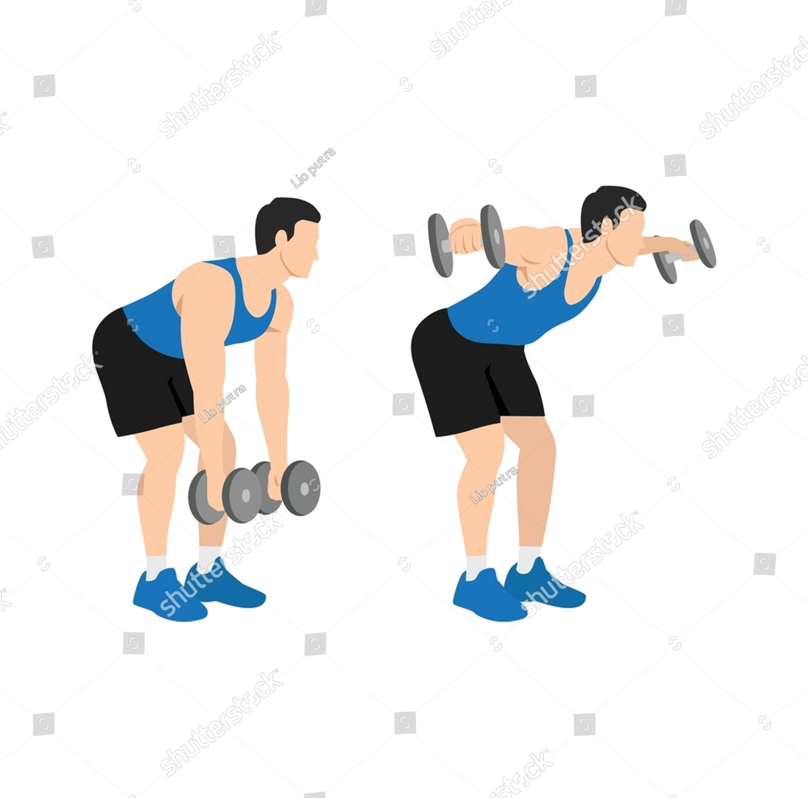

Exercise Description
Bend at the hips with your torso nearly parallel to the floor, holding dumbbells with palms facing each other. Lift the dumbbells out to the sides until they are level with your shoulders, then slowly lower them back to the starting position.
Reps and Sets
Beginners: 3 sets of 12-15 reps
Weights: 5-10 kg dumbbell per hand
Rest time between each set: 45secs
Video Implementation